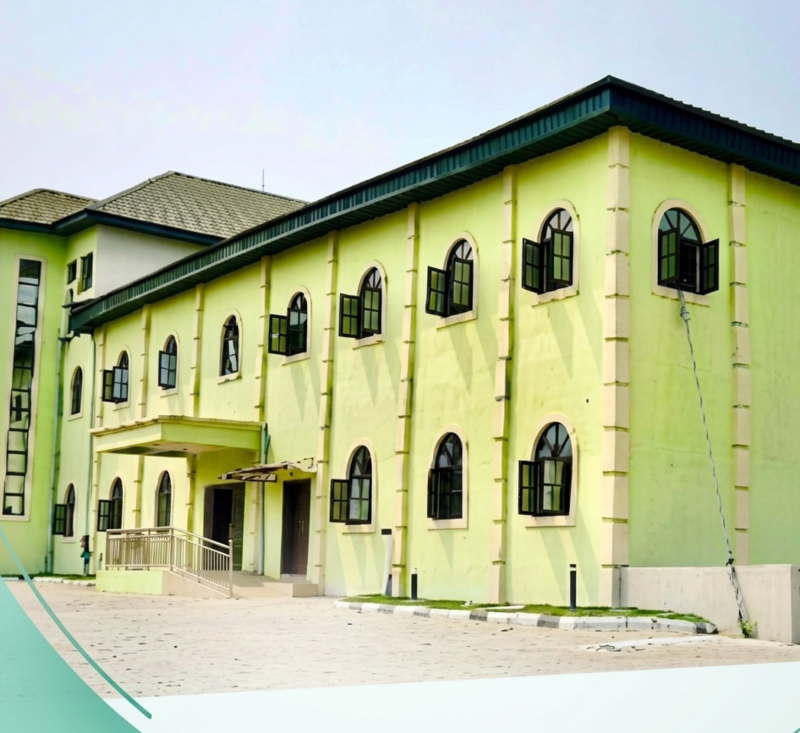

Come, drink from a
living water that never runs dry.
Living Waters International Christian Center is a family of believers in Port Harcourt learning to follow Jesus together — in worship, in the Word, and in everyday life.
A church for anyone thirsty for more.
Whatever brought you here, we're glad you came. At LICC, you'll find honest worship, teaching grounded in Scripture, and people who genuinely want to walk through life with you. We believe Jesus called Himself living water for a reason — He's the one thing that actually satisfies.
Under the leadership of our founding and lead pastors, our church has grown as a place where new believers and seasoned saints alike can grow deeper in their walk with Christ.
More About Us
Your first Sunday with us
No pressure, no formality required — just come as you are.
Spirit-Filled Worship
Sing, pray, and encounter God's presence in a service that's heartfelt and welcoming for first-timers and long-time members alike.
Word That Applies
Practical, Bible-based teaching from our pastors that speaks to real life — your marriage, your work, your faith, your future.
A Real Community
Connect with people who'll actually know your name — through our ministries, small groups, and a church family that shows up.
How is your heart today?
Select what you are feeling right now to receive a personalized Scripture promise and a pastoral prayer for your day.
Service Times
We gather every Sunday to worship, hear from God's Word, and grow together as a church family.
Full ScheduleLed with heart, grounded in the Word
Rev. Francis Kpeke-Johnson
Carries the founding vision of LICC — building a church rooted in the Word and led by the Spirit.
Rev. Anne Francis Kpeke-Johnson
Leads the church family today with a heart for discipleship, prayer, and practical faith.
One family across multiple campuses
Whether you are near our Port Harcourt Headquarters Cathedral, studying near campus, or worshiping from another city or online, there is an LICC fellowship near you.
Port Harcourt Cathedral
108 Ahoada East–West Rd, near Eliozu Flyover, Rukpakwulosi, Port Harcourt.
Choba & Trans-Amadi
Vibrant student fellowship at Uniport back gate, plus our central city fellowship at Peter Odili Road.
Abuja, Lagos & Online
Fellowships in FCT Abuja and Lagos Lekki, alongside weekly global live broadcasts on YouTube & Mixlr.